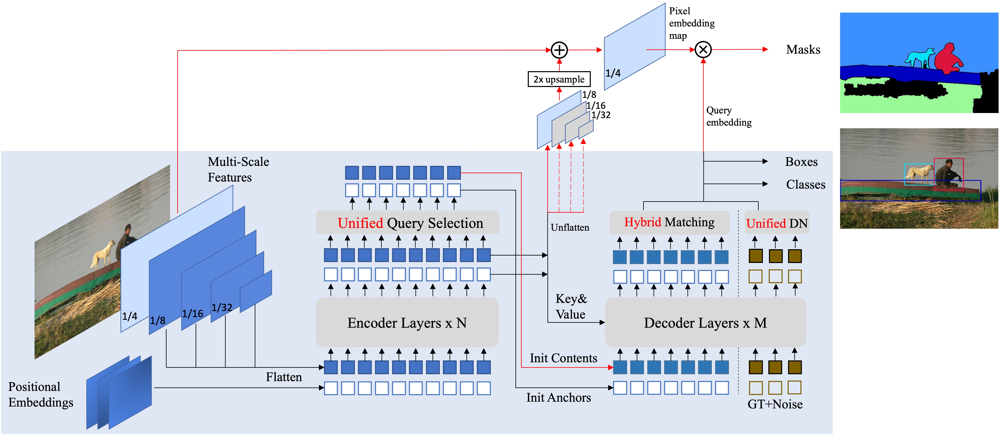

Mask DINO

1. 解決痛點
1.1) Transformer 時代「偵測最強」與「分割最強」長期各自為政，導致任務/資料無法互補
痛點 在 DETR-like 体系裡，SOTA 偵測（例如 DINO）與 SOTA 分割（例如 Mask2Former）並沒有統一架構，很難讓 detection ↔ segmentation 互相幫忙，也阻礙「用大規模偵測資料預訓練 → 拉高分割表現」這件事。
以前為什麼卡住
- 直接「把 DINO 拿去做分割」或「把 Mask2Former 拿去做偵測」效果不好，甚至粗暴 multi-task 還可能傷原本任務。
- 兩者核心設計目標不同：DINO 主要是 box regression / detection；Mask2Former 的 mask 專門設計雖強，但論文指出其 specialized architecture 不適合預測 boxes。
Mask DINO 的解法 Mask DINO 不是重新發明一套，而是在 DINO 上加一條「平行的 mask 分支」，讓同一組 Transformer decoder queries 同時輸出 box 與 mask，形成真正的 unified detection+segmentation 框架。
帶來什麼改變 在相同設定下，論文報告 Mask DINO 相對於 DINO 偵測 +0.8 AP、相對於 Mask2Former 在分割也有明顯提升（例如 instance / panoptic / semantic 都增益）。
1.2) 「Region-level（box）」與「Pixel-level（mask）」特徵不對齊：DINO 本來就不是為像素對齊而生
痛點 DETR/DINO 的 query（尤其 DAB/DINO 那套 anchor box query）很擅長做區域級回歸，但拿來做像素級 mask 時會遇到特徵對齊不足：論文直接說 DINO 是 region-level regression，不是為 pixel-level alignment 設計。
以前為什麼卡住 分割需要高解析度的 per-pixel 表徵；單靠 decoder 的 query 表徵去「硬生 mask」，容易在邊界、stuff 類、細碎結構上不穩。
Mask DINO 的解法：把 MaskFormer/Mask2Former 的「mask classification 思路」嫁接回 DINO Mask DINO 建一個 高解析度 pixel embedding map（到 1/4 resolution），把 backbone 特徵與 encoder 特徵融合後，再用 decoder 的 content query embedding 與 pixel embedding map 做 dot-product 產生二值 mask。 這個設計本質上承接 MaskFormer 系列的「mask classification / mask embedding × pixel embedding」框架，但關鍵是：它被放進 DINO 的 unified pipeline，而不是另起爐灶。
1.3) Query 數量/初始化的矛盾：分割模型常用少 queries，偵測常用多 queries；硬套會崩
痛點 在 DETR-like 偵測，常見設定是 300 queries；但論文註記 Mask2Former 用 300 queries 會退化，因此表格甚至不列。 這代表「同一套 query 設定」很難同時滿足 detection 與 segmentation，統一架構自然難做。
以前為什麼卡住
- 偵測要足夠 queries 才能覆蓋物體；
- 分割（尤其 mask classification 架構）如果 query 太多，會出現優化/匹配/噪聲等問題而退化。
Mask DINO 的解法：Unified & Enhanced Query Selection（把 encoder dense prior 用起來） Mask DINO 在 encoder output 上同時加 classification / detection / segmentation heads，利用 encoder 的 dense features 當更好的 prior；並透過「挑 top-ranked tokens」來初始化 mask queries（論文稱 unified query selection for mask）。 此外，它還提出「用 early-stage 較容易學的初始 masks 來增強 box 初始化」，做出 detection ↔ segmentation 的正向互助。
1.4) DETR-like 分割也會慢：早期訓練不穩、收斂慢，需要「像偵測那樣的去噪」機制
痛點 DETR 系列出了名的慢收斂，後來 DN-DETR、DINO 用 denoising training 明顯加速偵測訓練。(arXiv) 但 segmentation 這側如果沒有等價的去噪設計，統一訓練時就容易一邊快一邊慢，甚至互相拖累。
Mask DINO 的解法：Unified denoising for masks（把「box 是 mask 的粗略版本」當作去噪連結） 論文的核心想法是：mask 比 box 更細緻，因此可以把 box 視為 mask 的「noised version」，訓練時用 noised boxes/labels 去要求模型重建對應 masks，將偵測去噪的精神擴展到分割。 這讓 segmentation 的優化在 early stage 更穩、更快，與 detection 的訓練節奏更一致。
1.5) Matching 不一致：只用 box 或只用 mask 做匈牙利匹配會讓 multi-task 目標彼此拉扯
痛點 DETR 是 set prediction + bipartite (Hungarian) matching；但在 multi-task（同時 box+mask）時，如果 matching 依據不同訊號（只看 box 或只看 mask），會造成「同一個 query 到底對應哪個 GT？」的目標不一致，優化會晃。(arXiv)
Mask DINO 的解法：Hybrid bipartite matching（把 box 與 mask 的成本一起納入） Mask DINO 用 hybrid matching，讓 matching cost 同時考慮 classification、box、mask，得到更一致的 assignment，訓練更穩。
證據（消融） 論文的消融表明：移除 unified query selection / unified denoising / hybrid matching 等組件，box AP 與 mask AP 都會掉，全部移除更是大幅下滑，說明「不是隨便把兩個頭接在一起就會互助」。
1.6) 「資料合作」的痛點：分割標註貴、資料小；偵測資料大但以前很難有效帶動分割
痛點 大規模分割資料稀缺（像素標註成本高），而偵測資料（如 Objects365）更大；理想上應該讓分割能吃到偵測預訓練的紅利，但過去架構不統一就做不到或效果有限。
Mask DINO 的解法：因為它是從 DINO 延伸出的 unified 架構，所以能自然吃到 detection pretraining 論文明確強調：透過 unified framework，segmentation 可以受益於在大規模偵測資料上的預訓練；例如用 Objects365 + SwinL 的 detection pretraining 後，instance/panoptic/semantic 都顯著提升並達到非常強的成績。
1.7)（額外）Panoptic 的「stuff 類」其實不需要 box：以前硬做很浪費、也可能拖慢
痛點 在 panoptic segmentation 中，背景 stuff（如 sky）預測 box 本來就不必要，還會帶來不直覺的學習負擔。
Mask DINO 的解法：Decoupled box prediction（thing/stuff 拆開） 論文指出對 stuff 類別做 box prediction 不直覺且效率低，因而採取 decoupled 設計來改善收斂與表現。
模型架構祥解
下面我會用「真實設定」把一張 640×640 的影像，前向傳播走過 Mask DINO（圖中的流程），一路算到 Boxes / Classes / Masks。
我會把每一次「矩陣運算」都寫成 矩陣A⋅矩陣B=矩陣C，並且每個矩陣都標註 shape（其餘不省略）。
（注意：Backbone 是卷積網路；卷積在數學上可視為 im2col + GEMM 的矩陣乘法，我會用「合理且可運算」的方式呈現。）
全域設定（符合常見 Mask DINO/DETR 實務）
- 輸入影像：\((I\in\mathbb{R}^{640\times 640\times 3})\)
- 多尺度：1/4、1/8、1/16、1/32 \((\Rightarrow)\) 尺寸分別是 (160,80,40,20)
- 統一 token 維度（Transformer hidden dim）：(d=256)
- 類別數（以 COCO 為例）：(C=80)，加上 no-object \((\Rightarrow C+1=81)\)
- Query 數：(K=300)
- Deformable attention 每個 token 的採樣點數（跨多尺度總和）：(P=16)（例如 4 levels × 每層 4 點）
0) Input
我們把影像視為一個矩陣（後面做 patch/卷積會用到）：
- 影像張量：\((I(640\times 640\times 3))\)
1) Backbone + Multi-Scale Features（多尺度特徵）
1-1) 用 stride=4 的「patch embedding（等價卷積）」得到 1/4 特徵
把影像切成 \((4\times4)\) patch（\(\text{stride}=4\)），每個 patch 有 \((4\cdot4\cdot3=48)\) 維。 patch 數量：\((160\times160=25600)\)
令：
- Patch 矩陣：\((P_4(25600\times 48))\)
- Patch embedding 權重：\((W_{\text{emb}}(48\times 256))\)
- 1/4 token：\((F_4^{\text{flat}}(25600\times 256))\)
則：
把它 reshape 回 feature map：
- \((F_4(256\times160\times160))\)
1-2) 由 1/4 下採樣得到 1/8、1/16、1/32（可視為 FPN/strided conv 的矩陣版）
用「\(2\times2\) block 平均池化」的下採樣矩陣表示（真實模型是 conv+norm+act，但下採樣本質可寫成線性算子）：
- \((D_8(6400\times25600))\)（把 \((160\times160)\) 壓到 \((80\times80)\)）
- \((D_{16}(1600\times6400))\)
- \((D_{32}(400\times1600))\)
計算：
對應回 feature maps：
- \((F_8(256\times80\times80))\)
- \((F_{16}(256\times40\times40))\)
- \((F_{32}(256\times20\times20))\)
這一步解決的痛點（多尺度）
- 同一張圖同時有大物體與小物體，單尺度特徵很容易漏小物體或定位不準。
- 多尺度特徵讓後面的 attention 可以在「合適的尺度」取資訊（這也是 Deformable attention 的核心理由之一）。 相關背景：Reference（Deformable DETR）
2) Positional Embeddings + Flatten（多尺度→tokens）
對每個尺度 token 加上位置編碼（positional embedding）：
- \((PE_4(25600\times256))\)、\((PE_8(6400\times256))\)、\((PE_{16}(1600\times256))\)、\((PE_{32}(400\times256))\)
把四個尺度串接成一條序列（Transformer tokens）：
- 總長度：\((L=25600+6400+1600+400=34000)\)
- \((X(34000\times256))\)
（串接是 reshape/concat，不是矩陣乘法，因此我只標註 shape。）
這一步解決的痛點（位置資訊）
- Transformer 本身對「空間位置」不敏感，不加位置資訊會搞不清楚 token 在哪裡，影響定位與 mask 邊界。
3) Transformer Encoder（dense encoder tokens）
真實場景：如果用全域 self-attention，注意力矩陣是 \((34000\times34000)\)，太大。 Mask DINO（承接 Deformable DETR/DINO）使用 Multi-Scale Deformable Attention：每個 token 只去多尺度上「採樣 \(P\) 個點」，避免 \(O(L^2)\)。
令 encoder 輸入為 \((X(34000\times256))\)，輸出為 \((E(34000\times256))\)。
3-1) Encoder 的 deformable attention：先算 offsets 與 weights
- offset projection：\((W^{e}_{\Delta}(256\times 32))\)（因為 \((2P=32)\)）
- attn weight projection：\((W^{e}_{a}(256\times16))\)
接著對每列做 softmax 得到權重（非矩陣乘法，但真實模型必做）：
- \((A^{e}(34000\times16))\)
3-2) 依 offsets 去多尺度 feature 上取樣（Gather），再做加權和（用矩陣乘法表示）
把多尺度 memory（\((X_4,X_8,X_{16},X_{32})\)）視為可被取樣的來源。 Gather 後把每個 token 的 \((P)\) 個取樣向量堆疊起來：
- 取樣後堆疊矩陣：\((\hat{V}^{e}((34000\cdot16)\times256)=\hat{V}^{e}(544000\times256))\)
把權重 \((A^{e}(34000\times16))\) 變成 block 矩陣 \((W^{e}_{\text{blk}}(34000\times544000))\)（第 \(i\) 列只放該 token 的 \(16\) 個權重，其餘為 \(0\)），則加權和是：
3-3) Encoder FFN（前饋網路）
常見設定：中間維度 \((d_{ff}=1024)\)
- \((W^{e}*{1}(256\times1024))\)、\((W^{e}*{2}(1024\times256))\)
（中間還會加 residual、layernorm、activation；我不省略矩陣乘，但這些非乘法運算用文字註記。）
這一步解決的痛點（效率與可訓練性）
- 全域 attention \(O(L^2)\) 在高解析度直接炸掉；deformable attention 用 固定 \(P\) 點採樣，把複雜度壓到 \(O(LP)\)。 相關背景：Reference
- Encoder 產生的 dense tokens 為後面「從 tokens 挑 query」鋪路，讓 query 初始化更像 two-stage（下步）。 Mask DINO 核心：Reference
4) Unified & Enhanced Query Selection（QS：從 encoder 挑 top-K 當 queries）
這是 Mask DINO 很關鍵的「兩階段感」：不用一開始就靠 random learned queries，而是從 encoder dense tokens 挑「最像物體」的 token 當 decoder 初始 queries。
4-1) 在 encoder tokens 上跑 cls head，得到每個 token 的置信度
- 分類 head 權重：\((W_{\text{cls}}(256\times81))\)
- logits：\((S(34000\times81))\)
對每個 token 的類別分數取最大或取 thing 類分數（實務上會有做法差異），得到 confidence 向量：
- \((\text{conf}(34000\times1))\)（非矩陣乘法）
選 top-\(K\)（\(K=300\)）token 的 index。
4-2) 用「選擇矩陣」把 top-K tokens gather 成初始 content queries
用一個 one-hot selection matrix \((G(300\times34000))\)（每列只有一個 \(1\)）來表示 gather：
- 初始 content queries：\((Q_0(300\times256))\)
這一步解決的痛點（query 初始化）
- 傳統 DETR 直接用 learned queries，收斂慢、早期亂看；QS 讓 decoder 一開始就拿到「更像物體」的位置特徵，訓練與推論都更穩。 Mask DINO：Reference DINO（denoising + anchor query 思想）：Reference
4-3) 初始 boxes（Init Anchors）：由 \((Q_0)\) 回歸 bbox
- box head 權重：\((W_{\text{box}}(256\times4))\)
- 初始 box logits：\((B^{\text{logit}}_0(300\times4))\)
經 sigmoid 得到 normalized boxes（\([0,1]\) 的 \((cx,cy,w,h)\)）：
- \((B_0(300\times4))\)（非矩陣乘法，但真實必做）
4-4)（Mask-enhanced anchor init 的前置）先準備 pixel embedding map 的材料
Mask DINO 的 mask 需要 \(1/4\) resolution 的 pixel embedding map，我們先把 encoder 的 \(1/8\) tokens 抽出並上採樣到 \(1/4\)，與 backbone 的 \(1/4\) 融合。
取出 encoder 的 1/8 部分
encoder token 序列中，\(1/8\) 這段長度是 \(6400\)。用 selection matrix \((S_8(6400\times34000))\) 取出：
上採樣到 1/4（\(80\times80 \rightarrow 160\times160\)）
用上採樣矩陣 \((U_{8\to4}(25600\times6400))\)：
融合成 pixel embedding map（1/4）
令兩個線性轉換：
- \((W_b(256\times256))\) 作用在 backbone \(1/4\)
- \((W_e(256\times256))\) 作用在 encoder-upsample \(1/8\)
再相加得到 pixel embedding map（中間 activation / norm 省略為文字）：
- \((M_{\text{pix}}(25600\times256))\)
這一步解決的痛點（pixel-level alignment）
- DINO/DAB 類方法本質是 region-level regression，不擅長像素對齊；Mask DINO 用 pixel embedding map \(\otimes\) query embedding，把 query 與高解析像素空間對齊，邊界更準。 Mask DINO：Reference Mask2Former（mask classification 思路）：Reference
4-5) 初始 masks（由 \((Q_0)\) 與 pixel map 做 dot-product）
mask logits（在 \(1/4\) resolution）：
- \((M^{\text{logit}}_0(300\times25600))\)
reshape 成：
- \((M^{\text{logit}}_0(300\times160\times160))\)
4-6) Mask-enhanced anchor init（用初始 mask 反推更準的 box）
真實上會做「從 mask 得到更貼物體的 box」（例如找 mask 支撐範圍或做 soft moments）。我用「soft moments」寫成矩陣形式，符合真實可微做法：
先把每個 \(1/4\) 像素座標展平成座標向量：
- \((x(25600\times1))\)、\((y(25600\times1))\)（每個像素的座標）
- 將初始 mask 經 sigmoid 得到 \((M_0(300\times25600))\)（非矩陣乘法，但真實必做）
計算每個 query 的質量（mask 面積）：
計算重心（\(cx, cy\)）：
用 \((u_x/s, u_y/s)\) 得到中心（除法非矩陣乘法）。再用 second moment 近似寬高（同理可寫成矩陣乘法，略去非乘法的平方/開根號細節），得到一個由 mask 推出的 box：
- \((B^{\text{mask}}_0(300\times4))\)
最後把 box 融合（例如加權平均）：
（\((\alpha)\) 可視為對四個 box 參數的融合權重對角矩陣。）
這一步解決的痛點（anchor 更準）
- 早期 box init 不準會讓 decoder cross-attn「看錯地方」；用初始 mask 反推 box，讓 anchor 更貼近物體，後續 refine 更穩。 Mask DINO：Reference
5) Transformer Decoder（逐層 refine boxes，並更新 query 表徵）
decoder 層數設 \((M=9)\)。每層有：
- Query self-attention（queries 彼此互動，避免重複預測）
- Deformable cross-attention（用 anchor 引導去 memory 取樣）
- FFN
- Box refinement（像 DINO 那樣逐層更新）
圖中的 Unified DN：只在訓練時會把「GT+Noise 的 denoising queries」拼進來。推論前向不會用（所以這裡令 DN queries 數為 \(0\)）。 它解的痛點是 DETR 系列收斂慢；DINO/Mask DINO 用 denoising 讓 early stage 更穩。 參考：Reference、Reference、Reference
令初始：
- \((Q^{(0)}(300\times256)=Q_0(300\times256))\)
- \((B^{(0)}(300\times4)=B^{\text{enh}}_0(300\times4))\)
- encoder memory：\((E(34000\times256))\)
5-1) 每一層的 Query Self-Attention（第 \((\ell)\) 層）
投影矩陣：
- \((W^{d}*{Q}(256\times256))\)、\((W^{d}*{K}(256\times256))\)、\((W^{d}_{V}(256\times256))\)
attention 權重（softmax 非矩陣乘法）會形成：
- \((A^{(\ell)}(300\times300))\)
加權和：
5-2) Anchor-guided Deformable Cross-Attention（重點：看對位置）
(a) 用 query 產生 offsets 與 weights
- \((W^{d}*{\Delta}(256\times32))\)、\((W^{d}*{a}(256\times16))\)
softmax 後得到：
- \((A^{d(\ell)}(300\times16))\)
(b) 以 anchor box \((B^{(\ell-1)})\) 為 reference + offsets 取樣 encoder memory
Gather 後堆疊：
- \((\hat{V}^{d(\ell)}((300\cdot16)\times256)=\hat{V}^{d(\ell)}(4800\times256))\)
用 block 權重矩陣 \((W^{d(\ell)}_{\text{blk}}(300\times4800))\) 表示加權：
這一步解決的痛點（不亂看、可擴展）
- 如果 cross-attn 在整張圖上全搜，既慢又容易在 early stage 看錯；anchor-guided deformable attention 用 box 把注意力「鎖」在合理區域附近，收斂更快、定位更穩。 DINO/Deformable DETR 思路：Reference、Reference
5-3) Decoder FFN + 更新 query
把 self-attn 輸出與 cross-attn 輸出做 residual（加法），再 FFN：
先相加（同 shape）：
FFN：
- \((W^{d}*{1}(256\times1024))\)、\((W^{d}*{2}(1024\times256))\)
5-4) 每層 box refinement（DINO-style iterative update）
用同一個 box head（或 layer-specific）產生偏移：
真實更新是：
- \((B^{(\ell)} = \sigma(\text{inv}\sigma(B^{(\ell-1)}) + \Delta B^{(\ell)}))\)
（其中 sigmoid / inverse-sigmoid 非矩陣乘法，但這是 DINO 逐層 refine 的標準做法。） 參考：Reference
6) Heads：Boxes / Classes + Mask Branch（輸出）
經過 \((M=9)\) 層 decoder，我們得到：
- 最終 query embedding：\((Q^{(9)}(300\times256))\)
- 最終 boxes：\((B^{(9)}(300\times4))\)
6-1) Classes（分類輸出）
（再做 softmax/sigmoid 得到分數；非矩陣乘法。）
6-2) Boxes（偵測輸出）
（若最後一層直接用 \((B^{(9)})\)，這裡就不再乘一次；若仍用 head 產生，形式同上。）
- 最終 boxes：\((Y_{\text{box}}(300\times4)=B^{(9)}(300\times4))\)
6-3) Masks（分割輸出：pixel embedding map ⊗ query embedding）
pixel embedding map 我們在 4-4 已算出：
- \((M_{\text{pix}}(25600\times256))\)（對應 \(160\times160\)）
用最終 query embeddings 與 pixel map 做 dot-product：
- mask logits（\(1/4\) resolution）：\((Y_{\text{mask}}^{1/4}(300\times25600))\)
reshape：
- \((Y_{\text{mask}}^{1/4}(300\times160\times160))\)
6-4) Mask 上採樣回原圖 640×640
用上採樣矩陣 \((U_{4\to1}(409600\times25600))\)（\(160\times160 \rightarrow 640\times640\)）：
先把 mask 轉置成 \(((25600\times300))\) 方便左乘：
轉回來並 reshape：
- \((Y_{\text{mask}}^{1}(300\times409600))\)
- \((Y_{\text{mask}}^{1}(300\times640\times640))\)
這一步解決的痛點（不靠 ROI，能統一）
- 傳統 instance segmentation 常靠 ROIAlign/兩階段；Mask DINO 用 query embedding × pixel embedding map，自然統一 detection + segmentation，並且更容易吃到 detection pretraining 的紅利。 Mask DINO：Reference MaskFormer/Mask2Former 思路：Reference、Reference
最終輸出（真實推論會做的篩選）
你得到三個主要輸出張量：
- 分類分數：\((Y_{\text{cls}}(300\times81))\)
- 邊界框：\((Y_{\text{box}}(300\times4))\)（normalized \((cx,cy,w,h)\)）
- 遮罩：\((Y_{\text{mask}}^{1}(300\times640\times640))\)
實務上會：
- 取每個 query 的最高類別分數（排除 no-object），選 top-\(N\)（例如 \(100\)）
- 用分數閾值過濾
- 針對 masks 做 threshold（例如 \(0.5\)），並按分數做 instance/panoptic 的合併規則（資料集不同規則不同）
References（你要求的格式）
- Mask DINO：Reference
- DINO（DETR with Improved DeNoising Anchor Boxes）：Reference
- DN-DETR（Denoising Training）：Reference
- Deformable DETR（Multi-Scale Deformable Attention）：Reference
- MaskFormer：Reference
- Mask2Former：Reference
如果你想更「貼近論文實作」，我也可以把 (1) encoder/decoder 的 multi-head 拆開、(2) 每個尺度各自的 reference points、(3) Hybrid Matching 在訓練時的 cost 矩陣形狀 也用同樣的矩陣 shape 方式完整寫出來。
References（依你要的格式）
- Mask DINO 論文：Reference
- Mask DINO 官方實作：Reference
- DINO（DETR with Improved DeNoising Anchor Boxes）：Reference
- DETR（End-to-End Object Detection with Transformers）：Reference
- DN-DETR（Query DeNoising 加速 DETR 訓練）：Reference
- DAB-DETR（Dynamic Anchor Boxes）：Reference
- Deformable DETR（改善收斂/多尺度注意力）：Reference
- MaskFormer（mask classification 統一語意/全景）：Reference
- Mask2Former（masked attention 的通用分割）：Reference
- K-Net（另一種統一分割框架）：Reference
如果你想，我也可以把 Mask DINO 的三個關鍵組件（Unified QS / Unified DN / Hybrid Matching）各自用「訓練流程圖 + 公式逐步拆解 + 直覺例子」再更細地展開。
下面把 Mask DINO 推論（inference）時資料流會走過的主要模組，依照你貼的 Fig.1 那張架構圖，用「從輸入到輸出」的順序講清楚；同時我也會標出 哪些方塊是訓練才用、推論不會跑的。
推論時的主資料流（由左到右）
0) Input
- 輸入一張影像。
1) Backbone + Multi-Scale Features（多尺度特徵）
- 影像先進 Backbone（ResNet / Swin 等）抽特徵，得到多個尺度的 feature maps（圖上標 1/4、1/8、1/16、1/32）。
2) Positional Embeddings + Flatten（把多尺度特徵變成 Transformer tokens）
- 每個尺度加上 positional embeddings，再把多尺度 feature maps flatten 成 token 序列，送進 Transformer Encoder。
3) Transformer Encoder（產生 encoder tokens / encoder 特徵）
- Encoder 對這些 tokens 做編碼，產生一組 dense encoder features / tokens，作為後面 Decoder 的 Key/Value。
4) Unified & Enhanced Query Selection（QS：從 encoder 挑 “比較像物件/缺陷” 的 token 當 queries）
這一步在推論也會跑，是 Mask DINO「兩階段感」的關鍵：先從 encoder dense tokens 裡挑 top-K 當 decoder 的初始 queries。
- 在 encoder 輸出上接 三個 head（cls / box / mask）（論文說和 decoder head 同構），用 分類分數當 confidence，挑出 top-ranked tokens。
-
這些被選中的 tokens：
-
變成 decoder 的 content queries（Init Contents）
- 同時也會回歸 初始 boxes、並用高解析特徵去產生 初始 masks，作為 decoder 的 初始 anchors（Init Anchors）
- 作者還提到會用「初始 masks 反推/增強初始 boxes（mask-enhanced anchor init）」讓後面 decoder 的 anchor 更準。
5) Transformer Decoder（用 anchor box-guided / deformable attention 逐層 refine）
-
Decoder 接收：
-
來自 QS 的 queries（content + anchor boxes）
- Encoder 輸出的 Key/Value
- 在每一層 decoder 裡，boxes 會動態更新，並且用來 引導 deformable attention 去看對的位置（論文對 DINO 的描述）。
6) Heads：Boxes / Classes + Mask Branch（最後輸出）
Decoder 最終每個 query 會輸出三種東西：
6-1) Boxes + Classes（偵測輸出）
- box head：輸出 bbox（通常是最後一層的結果）
- cls head：輸出類別與分數
6-2) Masks（分割輸出：pixel embedding map ⊗ query embedding）
Mask DINO 的 mask 不是 ROI pooling，而是：
- 先做一張 pixel embedding map（1/4 解析度）： 把 backbone 的 1/4 特徵 (C_b) 跟 encoder 的 1/8 特徵 (C_e) 上採樣後融合起來。
- 再把 decoder 的 content query embedding (q_c) 跟 pixel embedding map 做 dot-product 得到每個 query 的 binary mask： ( m = q_c \otimes M(T(C_b) + F(C_e)) )
最後會把 mask resize 回原圖大小、依分數/閾值輸出（實作細節通常在 code/設定）。
推論不會跑的模組（訓練專用）
這兩塊你圖上有，但 inference 不需要：
-
Unified DN（GT + Noise）
-
這是 denoising training：需要 ground truth 加噪聲後餵進 decoder。推論沒 GT，所以不走這條支路。
-
Hybrid Matching（Hungarian matching 的 cost 設計）
-
這是訓練時把預測集合跟 GT 做 bipartite matching 用的 cost（還加了 mask cost 讓 box/mask 配對一致）。推論不做 matching。
一句話總結推論資料會經過的「主要方塊」
Backbone 多尺度特徵 →（pos emb + flatten）→ Transformer Encoder → QS 選 top-K queries（含 init boxes/masks anchors）→ Transformer Decoder（box-guided deformable attention 逐層 refine）→ box/cls head + mask branch（pixel embedding map ⊗ query embedding）→ 輸出 Boxes / Classes / Masks
如果你要把它對應到「缺陷檢測」落地，我也可以用同樣的資料流，幫你標出：
- 哪一段最吃解析度（小白點/pinhole 會卡在哪）
- QS top-K 要設多少、mask map 用 1/4 夠不夠、是否需要切圖/多尺度 讓你更容易評估 Mask DINO 在 AA/BM/Edge 缺陷上的可行性。